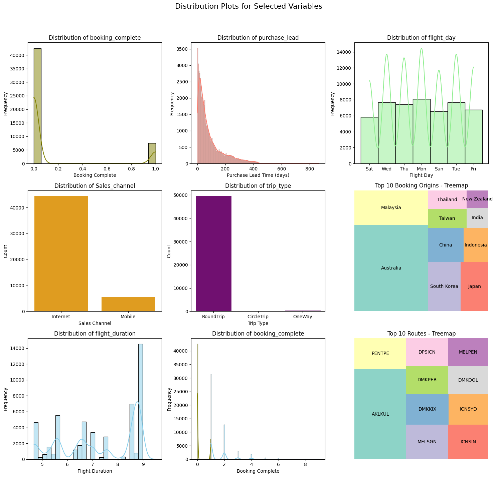

The Goal of the project is to help British Airwyays understand their customer’s booking behaviour for the holidays by looking at 5000 records of customer fligt booking data. It was part of a job simulation as a Junior Data Scientist at British Airways I built a predictive model on Random Forest Algoritmn to Help British Airways Answer the following Business questions:
What are the most important varables contribute to customers booking holidays with British Airways?
Is it Viable to Use the gievn data to Predict Customers booking holidays with British Airways?
In this Interactive Notebook I will demonstrate my data science process for building a predictive model based of customer flight booking data.follow along and be free to reach out with comments and feedback on my process.
You can find the source code for this project at my github page. You can also find the Jupyter notebook and the dataset on my kaggle page.
Click to Read Executive Summary on Research Findings
Executive Summary
After building and testing the predictive model with 83.5% Accuracy on the given data, we discorvered Answers to the business questions:
The Top Ten(10) Most Important Variables That Contribute to Customers Booking Holidays with British Airways are:
Booking Origins From Malaysia
Flight Duration
Purchase lead
Length of stay
Flight hour
Flight day
Flights from Australia
Flights from Indonesia
Number of passengers per booking
Bookings from China
It Is Viable To Use the Given Data to Predict Customers Booking Holidays With British Airways with 83.7% Accuracy
Potential Application of Insights
With insights from the predictive model, British Airways sales and marketing function can deploy their strategy to flight origins like Malaysia, Australia, Indonesia and China to increase their sales and revenue. They can also experiment with promotional incentives around flight duration, purchase lead and length of stay.
Logistics and Supply Chain function can use the predictive model to forecast the demand for flights during holiday seasons based on historical booking patterns. This can enable the team to Adjust inventory levels and allocate resources more efficiently in response to predicted demand.
Project Outline
For this project I completed the following tasks:
Performed Exploratory Data Analysis.
Cleaned and Prepared the data for modeling.
Performed Feature Engineering.
Built and Evaluated models.
Test the model on unseen data.
Interpret the model results and answer the business questions.
Project Dependencies
Show the code
# import project librariesimport pandas as pdimport numpy as np # for linear algebraimport math # for math operations import seaborn as sns # for plotting# handling filesimport os import sys # data preprocessingfrom sklearn.preprocessing import LabelEncoderfrom sklearn.model_selection import train_test_splitfrom imblearn.over_sampling import SMOTE# Model Building and Fittingfrom sklearn.ensemble import RandomForestClassifier# Model Evaluation and Tuningfrom sklearn.metrics import accuracy_score, classification_report, confusion_matrixfrom sklearn.experimental import enable_halving_search_cvfrom sklearn.model_selection import HalvingGridSearchCVfrom sklearn.metrics import precision_recall_curve, auc# visualisation librariesimport seaborn as snsimport matplotlib.pyplot as pltimport matplotlib.pyplot as plt # for plottingimport squarify # for tree maps
Exploratory Data Analysis
The working dataset contains 5000 entries of customer booking data from British Airways. The data contains 13 features and 1 target variable. The target variable is the booking completion status of the customer.
To understand the data, I performed exploratory data analysis. I used the following techniques to understand the data:
Visual inspection of data.
Exploratory Data Visualizations.(Univariate, Bivariate and Multivariate analysis)
The dataframe object has a .head() method that allows us to view a specified number of rows in the dataset. This method came in handy for visual inspection of the dataset and to get a feel of the data.
# retrieve a summarised info about the columnsdf.info()
The summary on the columns indicates that there are:
14 unique columns
5000 rows
Zero null values (which is good!)
Three unique data types (int64, float64 and object)
Here is a more detailed data description, explaining exactly what each column means:
Click to expand!
num_passengers = the number of passengers associated with a particular flight booking.
sales_channel = indicates the channel through which the flight booking was made.
trip_type = indicates the trip Type (Round Trip, One Way, Circle Trip)
purchase_lead = the number of days between travel date and booking date
length_of_stay = the number of days spent at destination
flight_hour = represents the scheduled departure or arrival time of the flight
flight_day = day of week of flight departure
route = origin -> represents the destination flight route
booking_origin = shows the country from where booking was made
wants_extra_baggage = indicates if the customer wanted extra baggage in the booking
wants_preferred_seat = indicates if the customer wanted a preferred seat in the booking
wants_in_flight_meals = if the customer wanted in-flight meals in the booking
flight_duration = shows the total duration of flight (in hours)
booking_complete = indicates if the customer completed the booking
Considering the unique data types, I decided to perform label encoding to convert the categorical variables to numerical variables. converting categorical variables to numerical representations will allow me to use machine learning algorithms effectively.
In our case the ideal candidate for label encoding is: flight_day. this is because it is currently a nominal variable with no order or hierarchy.
As can be seen the current days of the week have no order or hierarchy.
To encode this variable I will map the days of the week to the following numerical representations:
mapping = {"Mon": 1,"Tue": 2,"Wed": 3,"Thu": 4,"Fri": 5,"Sat": 6,"Sun": 7,}# set the new valuesdf["flight_day"] = df["flight_day"].map(mapping)
df["flight_day"].unique()
array([6, 3, 4, 1, 7, 2, 5])
As can be seen the fligt_days column has been successfully encoded.
Summary Statistics
df.describe()
num_passengers
purchase_lead
length_of_stay
flight_hour
flight_day
wants_extra_baggage
wants_preferred_seat
wants_in_flight_meals
flight_duration
booking_complete
count
50000.000000
50000.000000
50000.00000
50000.00000
50000.000000
50000.000000
50000.000000
50000.000000
50000.000000
50000.000000
mean
1.591240
84.940480
23.04456
9.06634
3.814420
0.668780
0.296960
0.427140
7.277561
0.149560
std
1.020165
90.451378
33.88767
5.41266
1.992792
0.470657
0.456923
0.494668
1.496863
0.356643
min
1.000000
0.000000
0.00000
0.00000
1.000000
0.000000
0.000000
0.000000
4.670000
0.000000
25%
1.000000
21.000000
5.00000
5.00000
2.000000
0.000000
0.000000
0.000000
5.620000
0.000000
50%
1.000000
51.000000
17.00000
9.00000
4.000000
1.000000
0.000000
0.000000
7.570000
0.000000
75%
2.000000
115.000000
28.00000
13.00000
5.000000
1.000000
1.000000
1.000000
8.830000
0.000000
max
9.000000
867.000000
778.00000
23.00000
7.000000
1.000000
1.000000
1.000000
9.500000
1.000000
Some Highlights from The summary statistics
The majority of bookings involve a small number of passengers, with 75% of the bookings having either 1 or 2 passengers. However, there are cases with up to 9 passengers.
The average purchase lead time is approximately 85 days, indicating that customers typically book flights well in advance of their travel dates. Inferring from the significant difference between the mean and the median(50th percentile) the distribution is positively-skewed. The predictive model will be trained with Random Forest Algorithm so it is important to note that this algorithm is not sensitive to outliers.
It’s also interesting to point out that the average length of stay is approximately 23 days, indicating that customers typically stay at their destination for a short period of time. However, the maximum length of stay is 778 days, suggesting some outliers or potentially long-term bookings.
Further inspection of the data will help us understand the data better.
I perfomed preliminary data analysis to understand the shape and spread of the dataset and to also have a first glance of the relationships between the target variable and the rest of the variables. I used the following techniques to understand the data:
Univariate Analysis
Bivariate Analysis
Univariate analysis
My goal for this initial step was to understand the distribution of each variable in the dataset. I used the following techniques to understand the distribution:
distribution plots
tree maps
bar plots
hopefully, patterns and outliers would emerge from this analysis that would help me understand the data better.
booking_complete
num_passengers
purchase_lead
flight_day
Sales_channel
trip_type
booking_origin
flight_duration
route
I examined the above selected variables in the dataset using distribution plots. The plots below show the distribution of the following variables:
Show the code
# Convert numeric weekday to corresponding day namesweekday_mapping = {1: 'Mon', 2: 'Tue', 3: 'Wed',4: 'Thu', 5: 'Fri', 6: 'Sat', 7: 'Sun'}# Set up the grid layoutfig, axes = plt.subplots(nrows=3, ncols=3, figsize=(15, 15))fig.suptitle('Distribution Plots for Selected Variables', fontsize=16)# Create a copy of the DataFramedf_copy = df.copy()# Apply the mapping to the copydf_copy['flight_day'] = df_copy['flight_day'].map(weekday_mapping)# Plotting booking_completesns.histplot(data=df_copy, x='booking_complete', kde=True, color='olive', ax=axes[0, 0])axes[0, 0].set_title('Distribution of booking_complete')axes[0, 0].set_xlabel('Booking Complete')axes[0, 0].set_ylabel('Frequency')# Plotting num_passengerssns.histplot(data=df_copy, x='num_passengers', kde=True, color='skyblue', ax=axes[2, 1])axes[2, 1].set_title('Distribution of num_passengers')axes[2, 1].set_xlabel('Number of Passengers')axes[2, 1].set_ylabel('Frequency')# Plotting purchase_leadsns.histplot(data=df_copy, x='purchase_lead', kde=True, color='salmon', ax=axes[0, 1])axes[0, 1].set_title('Distribution of purchase_lead')axes[0, 1].set_xlabel('Purchase Lead Time (days)')axes[0, 1].set_ylabel('Frequency')# Plotting flight_day with day labelssns.histplot(data=df_copy, x='flight_day', kde=True, color='lightgreen', ax=axes[0, 2])axes[0, 2].set_title('Distribution of flight_day')axes[0, 2].set_xlabel('Flight Day')axes[0, 2].set_ylabel('Frequency')# Plotting Sales_channelsns.countplot(data=df_copy, x='sales_channel', color='orange', ax=axes[1, 0])axes[1, 0].set_title('Distribution of Sales_channel')axes[1, 0].set_xlabel('Sales Channel')axes[1, 0].set_ylabel('Count')# Plotting trip_typesns.countplot(data=df_copy, x='trip_type', color='purple', ax=axes[1, 1])axes[1, 1].set_title('Distribution of trip_type')axes[1, 1].set_xlabel('Trip Type')axes[1, 1].set_ylabel('Count')# Adding the treemap for booking_origin (top 10 countries only)top_10_origin_counts = df_copy['booking_origin'].value_counts().nlargest(10)axes[1, 2].axis('off') # Turn off axis for treemapsquarify.plot(sizes=top_10_origin_counts, label=top_10_origin_counts.index, color=sns.color_palette("Set3"), ax=axes[1, 2])# Adding title to the treemapaxes[1, 2].set_title('Top 10 Booking Origins - Treemap')# Plotting flight_durationsns.histplot(data=df_copy, x='flight_duration', kde=True, color='skyblue', ax=axes[2, 0])axes[2, 0].set_title('Distribution of flight_duration')axes[2, 0].set_xlabel('Flight Duration')axes[2, 0].set_ylabel('Frequency')# Plotting booking_completesns.histplot(data=df_copy, x='booking_complete', kde=True, color='olive', ax=axes[2, 1])axes[2, 1].set_title('Distribution of booking_complete')axes[2, 1].set_xlabel('Booking Complete')axes[2, 1].set_ylabel('Frequency')# Plotting route# Get the top 10 routestop_10_routes = df_copy['route'].value_counts().nlargest(10)# Plotting routeaxes[2, 2].axis('off') # Turn off axis for treemapsquarify.plot(sizes=top_10_routes, label=top_10_routes.index, color=sns.color_palette("Set3"), ax=axes[2, 2])axes[2, 2].set_title('Top 10 Routes - Treemap')# Adjust layoutplt.tight_layout(rect=[0, 0.03, 1, 0.95])# Show the plotsplt.show()# Plotting flight_day with day labelssns.histplot(data=df_copy, x='flight_day', kde=True, color='lightgreen', ax=axes[0, 2])axes[0, 2].set_title('Distribution of flight_day')axes[0, 2].set_xlabel('Flight Day')axes[0, 2].set_ylabel('Frequency')# Plotting Sales_channelsns.countplot(data=df_copy, x='sales_channel', color='orange', ax=axes[1, 0])axes[1, 0].set_title('Distribution of Sales_channel')axes[1, 0].set_xlabel('Sales Channel')axes[1, 0].set_ylabel('Count')# Plotting trip_typesns.countplot(data=df_copy, x='trip_type', color='purple', ax=axes[1, 1])axes[1, 1].set_title('Distribution of trip_type')axes[1, 1].set_xlabel('Trip Type')axes[1, 1].set_ylabel('Count')# Adding the treemap for booking_origin (top 10 countries only)top_10_origin_counts = df_copy['booking_origin'].value_counts().nlargest(10)axes[1, 2].axis('off') # Turn off axis for treemapsquarify.plot(sizes=top_10_origin_counts, label=top_10_origin_counts.index, color=sns.color_palette("Set3"), ax=axes[1, 2])# Adding title to the treemapaxes[1, 2].set_title('Top 10 Booking Origins - Treemap')# Plotting flight_durationsns.histplot(data=df_copy, x='flight_duration', kde=True, color='skyblue', ax=axes[2, 0])axes[2, 0].set_title('Distribution of flight_duration')axes[2, 0].set_xlabel('Flight Duration')axes[2, 0].set_ylabel('Frequency')# Plotting route# Get the top 10 routestop_10_routes = df_copy['route'].value_counts().nlargest(10)# Plotting routeaxes[2, 2].axis('off') # Turn off axis for treemapsquarify.plot(sizes=top_10_routes, label=top_10_routes.index, color=sns.color_palette("Set3"), ax=axes[2, 2])axes[2, 2].set_title('Top 10 Routes - Treemap')# Adjust layoutplt.tight_layout(rect=[0, 0.03, 1, 0.95])# Show the plotsplt.show()#| code-fold: true

<Figure size 640x480 with 0 Axes>
Click to Read My Observations!
The Univariate analysis revealed the following insights:
Majority of booking_complete is 0 indicating that the majority of customers do not complete the booking. This is a very interesting insight because it introduces the challenge of class imbalance during model training.
the distribution of num_passengers is positively skewed with a long tail. This indicates that the majority of bookings involve a small number of passengers.
The distribution of purchase_lead is positively skewed with a long tail. This means that most passengers book their flights well in advance of their travel dates.for the purposes of predicting buying behaviour it informs my hypothesis that the longer the purchase lead time the more likely the customer to not complete the booking.
The distribution of flight_day is uniform. This means that the bookings are evenly distributed across the days of the week. This is an interesting insight because it may suggest that the day of the week does not have a significant impact on the buying behaviour of customers.
The distribution of sales_channel is skewed to the right. This means that the majority of bookings are made through the online channel. The right skewness indicates that there might be a long tail of other channels, but they are less frequent.
The distribution of trip_type is also positively-skewed, indicating that the majority of bookings are for round trips. While this suggests a prevalent preference for round trips, it is essential to conduct further bivariate analysis to confirm whether trip type significantly influences customer buying behavior.”
The majority of flight_origins are from Australia, while there are relatively even distributions among the remaining origins. This observation may suggest a low correlation between flight origin and buying behavior. However, further bivariate analysis will be conducted to confirm this hypothesis.
Similarly the majority of route is AKLKUL indicating that the majority of customers book flights from Auckland to Kuala Lumpur. This is a very interesting insight because it suggests that there is a significant number of customers who book flights from Auckland to Kuala Lumpur.
The distribution of flight_duration is quite skewed to the left. This means that a significant number of flights are short-haul flights. This observation may suggest a low correlation between flight duration and buying behavior. However, further bivariate analysis will be conducted to confirm this hypothesis.
Bivariate Analysis Using Heat Maps
My goal for this step was to understand the relationship between each variable and the target variable. For the purposes of this project, the target variable is booking_complete. Considering that there are 14 variables I decided to use heatmaps to visualize the correlation between each variable and the target variable.
I chose the heatmap because it allowed me to visualize the correlation between each variable and the target variable in one plot. This is a very efficient way to visualize the correlation between variables.
Before the Bivariate analysis, I Had some hypotheses about the relationship between the variables and the target variable. The hypotheses were as follows:
The purchase_lead has an impact on customer booking completion.
The flight_day does not have a significant impact on the buying behaviour of customers.
The trip_type does not have a significant impact on the buying behaviour of customers.
The flight_origin does not have a significant impact on the buying behaviour of customers.
the sales_channel may have a significant impact on the buying behaviour of customers.
Preprocessing the data for Bivariate analysis
Some of the variables in the dataset are categorical variables that have no inherent order.The correalation matrix which will be used for analysis requires all variables to have numerical representations. Hence the need to label encode the remaining nominal variables:
To perform bivariate analysis on these variables I need to convert them to numerical representations using one-hot encoding. I used the pandas get_dummies() method to perform one-hot encoding on the following variables:
sales_channel
trip_type
booking_origin
route
Show the code
# label encodinglabel_encoder = LabelEncoder()# Apply label encoding to categorical variablesdf_copy['booking_origin'] = label_encoder.fit_transform(df_copy['booking_origin'])df_copy['route'] = label_encoder.fit_transform(df_copy['route'])df_copy['sales_channel'] = label_encoder.fit_transform(df_copy['sales_channel'])df_copy['trip_type'] = label_encoder.fit_transform(df_copy['trip_type'])df_copy['flight_day'] = label_encoder.fit_transform(df_copy['flight_day'])df_copy.head()# check the data typesdf.dtypes
Now that the categorical variables have been successfully encoded. I can proceed to perform bivariate analysis.
# perform Bivariate analysis using heatmapplt.figure(figsize=(12, 8))sns.heatmap(df_copy.corr(), annot=True, cmap='coolwarm')plt.title('Correlation Matrix of 14 Variables on customer booking behaviour', fontsize=16)# Show the plotplt.show()
My Observations
Click to Read Detailed Observations!
Booking Origin:
Correlation Coefficient: 0.13
Interpretation: There’s a notable positive relationship (0.13) between booking origin and booking completions, suggesting that specific booking origins play a relatively significant role in determining completion likelihood.
Flight Duration:
Correlation Coefficient: -0.11
Interpretation: The negative correlation coefficient (-0.11) implies that longer flight durations may be associated with a lower likelihood of booking completions.
Wants Extra Baggage:
Correlation Coefficient: 0.068
Interpretation: With a positive coefficient (0.068), the desire for extra baggage seems to have a fair contribution to the likelihood of completing bookings.
Length of Stay:
Correlation Coefficient: -0.042
Interpretation: A slightly negative correlation coefficient (-0.042) indicates a modest reverse relationship between length of stay and booking completion.
Wants Inflight Meals and Trip Type:
Correlation Coefficient: Positive (Same for both)
Interpretation: Both exhibit a positive contribution to booking completion, suggesting that customers expressing interest in inflight meals or specific trip types may be slightly more likely to complete their bookings.
In summary, analysis of the heat map reveals key correlations with booking completions. Notably, specific booking origins play a significant role (correlation coefficient of 0.13), while longer flight durations show a negative correlation (-0.11) with completion likelihood. Surprisingly, the desire for extra baggage positively contributes (correlation coefficient of 0.068), while length of stay exhibits a modest reverse relationship (-0.042). Customer preferences for inflight meals and certain trip types positively influence completion likelihood. These findings provide valuable insights for further exploration and feature engineering in predictive modeling efforts.
Modeling With Random Forest
To build a predictive model to predict the likelihood of booking completions, I used the Random Forest algorithm. I chose Random Forest Algorithm because of it’s ensemble approach to learning to predict the relationships between the variables and the target variable. It’s like having multiple experts(decision trees) in the room to help you make a decision.
The Random Forest algorithm is also very robust to outliers and noise in the data. This is a very important feature because the dataset has some outliers and noise which refers to a random error or variance in a measured variable.
Preprocessing The Data for Predictive Modeling
Before proceeding to training the model:
One-hot encode the categorical variables:
sales_channel
trip_type
booking_origin
route
Split the data into training and testing datasets.
One Hot Encoding Booking Data
Some of the variables in the dataset are categorical variables that have no inherent order. Hence the need to label encode the remaining nominal variables:
I needed to convert them to numerical representations using one-hot encoding. I used the pandas get_dummies() method to perform one-hot encoding on the selected variables:
According to the pandas documentation, the get_dummies() method converts categorical variables into dummy/indicator variables. This means that each categorical variable will be converted into a numerical representation. The numerical representation will be in the form of a binary vector with a 1 representing the presence of a category and a 0 representing the absence of a category.
let’s comfirm that the categorical variables have been successfully encoded.
df.head()
num_passengers
purchase_lead
length_of_stay
flight_hour
flight_day
wants_extra_baggage
wants_preferred_seat
wants_in_flight_meals
flight_duration
booking_complete
...
route_TGGXIY
route_TPETRZ
route_TPETWU
route_TPEURT
route_TPEVTE
route_TRZWUH
route_TRZXIY
route_TWUWUH
route_TWUXIY
route_URTXIY
0
2
262
19
7
6
1
0
0
5.52
0
...
False
False
False
False
False
False
False
False
False
False
1
1
112
20
3
6
0
0
0
5.52
0
...
False
False
False
False
False
False
False
False
False
False
2
2
243
22
17
3
1
1
0
5.52
0
...
False
False
False
False
False
False
False
False
False
False
3
1
96
31
4
6
0
0
1
5.52
0
...
False
False
False
False
False
False
False
False
False
False
4
2
68
22
15
3
1
0
1
5.52
0
...
False
False
False
False
False
False
False
False
False
False
5 rows × 914 columns
Split Data for Training and Testing
The next step is to split the data into training and testing datasets. I used the train_test_split() method from the sklearn.model_selection module to split the data into training and testing datasets. Doing so will allow me to train the model on the training dataset and test the model on the testing dataset.
from sklearn.model_selection import train_test_splitX = df.drop('booking_complete', axis=1) # Features (excluding the target variable)y = df['booking_complete'] # Target variable# Stratify the split to ensure that the proportion of the target variable is the same in both setsX_train, X_test, y_train, y_test = train_test_split( X, y, test_size=0.2, random_state=42, stratify=y)
X: the features to be used for training the model. In this case, the features are all the columns in the dataset except the target variable booking_complete.
y: the target variable to be predicted. In this case, the target variable is booking_complete.
X_train: the features to be used for training the model.
X_test: the features to be used for testing the model.
y_train: the target variable to be used for training the model.
y_test: the target variable to be used for testing the model.
stratify: this argument is set to y to ensure that the proportion of the target variable is the same in both the training and testing datasets. I noticed a significant imbalance in the target variable, so it was important to ensure that the imbalance was reflected in both the training and testing datasets.
Training the Model
Now that the data has been successfully preprocessed, I can proceed to train the model. I used the RandomForestClassifier() class from the sklearn.ensemble module to train the model. The RandomForestClassifier() method takes the following arguments:
n_estimators: the number of trees in the forest. I set this to 100.
max_depth: the maximum depth of the tree. I set this to 5.
random_state: the seed used by the random number generator. I set this to 1.
from sklearn.ensemble import RandomForestClassifiern_estimators =100max_depth =None# or a specific valuemin_samples_split =2min_samples_leaf =1max_features =None# or another value like 'sqrt' or 'log2'# Create the RandomForestClassifier instancerf_model = RandomForestClassifier( n_estimators=n_estimators, max_depth=max_depth, min_samples_split=min_samples_split, min_samples_leaf=min_samples_leaf, max_features=max_features, # Change 'auto' to None random_state=42# You can set a random state for reproducibility)# Fit the model to the training datarf_model.fit(X_train, y_train)
In a Jupyter environment, please rerun this cell to show the HTML representation or trust the notebook. On GitHub, the HTML representation is unable to render, please try loading this page with nbviewer.org.
Now that the model has been trained, I can proceed to evaluate the model. I used the accuracy_score()classification_report(), confusion_matrix()methods to evaluate the model.
from sklearn.metrics import accuracy_score, classification_report, confusion_matrix# Make predictions on the test sety_pred = rf_model.predict(X_test)# Evaluate the modelaccuracy = accuracy_score(y_test, y_pred)report = classification_report(y_test, y_pred)confusion_mat = confusion_matrix(y_test, y_pred)print(f"Accuracy: {accuracy}")print("Classification Report:\n", report)print("Confusion Matrix:\n", confusion_mat)
The accuracy is 84.96%, indicating the overall proportion of correct predictions.
The precision, recall, and F1-score for class 0 (booking not completed) are relatively high, suggesting good performance in predicting this class.
The model struggles with class 1 (booking completed), as indicated by lower precision, recall, and F1-score.
The class 1 recall is particularly low (0.18), indicating that the model is not capturing a significant portion of actual positive instances. This is a significant issue because the goal is to predict booking completions. The model is not performing well in this regard.
The reason for this is the class imbalance, recall that from the univariate analysis the majority of booking_complete is 0 indicating that the majority of customers do not complete the booking. The model is biased towards predicting 0 because of the class imbalance. This is a very important insight because it informs the next steps in the project.
Improving the Model
Now that I have a baseline model, I can proceed to improve the model. I used the following techniques to improve the model:
Resolving the class imbalance.
Hyperparameter tuning.
Resolving the Class Imbalance
I implemented oversampling the class 1(booking complete) using the Synthetic Minority Over-sampling Technique (SMOTE), which is a popular technique for oversampling imbalanced datasets. I used the SMOTE() method from the imblearn.over_sampling module to oversample the minority class.
# Apply SMOTE to the training setfrom imblearn.over_sampling import SMOTEsmote = SMOTE(random_state=42)X_resampled, y_resampled = smote.fit_resample(X_train, y_train)# Create and train the RandomForestClassifier on the resampled datarf_model = RandomForestClassifier(n_estimators=100, random_state=42)rf_model.fit(X_resampled, y_resampled)# Make predictions on the test sety_pred = rf_model.predict(X_test)
Re-Evaluating the Model
Now that the model has been trained with oversampled data, I can proceed to re-evaluate the model. I used the accuracy_score()classification_report() and confusion_matrix() methods to evaluate the model.
The recall for class 1 has increased from 0.16 to 0.22, indicating an improvement in capturing actual positive instances of booking completions
Improving Overall Accuracy With Hyperparameter Tuning
Now that the model has been trained with oversampled data, I can proceed to improve the model. I used the following techniques to improve the model with hyperparemeter Tuning
Hyperparameter tuning is the process of finding the best combination of hyperparameters for a machine learning algorithm that results in the best performance. Hyperparameters are variables that are set before training a model. They control the learning process and the resulting model.
The Random Forest algorithm has several hyperparameters that can be tuned to improve the model’s performance. I used the HalvingGridSearchCV() method from the sklearn.model_selection module to tune the hyperparameters. I opted for the HalvingGridsearch method because it’s relatively faster compared to the traditional GridSearch method
Show the code
from sklearn.experimental import enable_halving_search_cv # noqafrom sklearn.model_selection import HalvingGridSearchCV# Define the parameter grid to searchparam_grid = {'n_estimators': [50, 100, 150],'max_depth': [None, 10, 20],'min_samples_split': [2, 5, 10],'min_samples_leaf': [1, 2, 4],'max_features': ['sqrt', 'log2']}# Create a RandomForestClassifierrf_model = RandomForestClassifier(random_state=42)# Create HalvingGridSearchCV objecthalving_search = HalvingGridSearchCV( estimator=rf_model, param_grid=param_grid, cv=5, scoring='accuracy', factor=3)# Fit the model to the datahalving_search.fit(X_resampled, y_resampled)# Get the best parametersbest_params = halving_search.best_params_print("Best Hyperparameters:", best_params)
# Apply SMOTE to the training setfrom imblearn.over_sampling import SMOTEsmote = SMOTE(random_state=42)X_resampled, y_resampled = smote.fit_resample(X_train, y_train)# Create and train the RandomForestClassifier on the resampled datarf_model = RandomForestClassifier(max_depth=None, max_features='sqrt', min_samples_leaf=1, min_samples_split=2, n_estimators=100, random_state=42)rf_model.fit(X_resampled, y_resampled)# Make predictions on the test sety_pred = rf_model.predict(X_test)
Re-Evaluating the Model
Now that the model has been trained with the best parameters, I can proceed to re-evaluate the model. like before, I tested the accuracy, confusion matrix and created a report
I also further tested with AUROC metric to check the performance of the model given the heavy class imbalance observed
Considering the class imbalance, I decided to use the AUROC metric to evaluate the model. The AUROC metric is a popular metric for evaluating classification models with imbalanced classes. I used the roc_auc_score() method from the sklearn.metrics module to evaluate the model.
Show the code
from sklearn.metrics import precision_recall_curve, auc# Predict probabilities for positive class (class 1)probas_pred = rf_model.predict_proba(X_test)[:, 1]# Compute precision-recall curve and AUC-PRprecision, recall, _ = precision_recall_curve(y_test, probas_pred)area_under_pr_curve = auc(recall, precision)# Plot Precision-Recall curveplt.figure(figsize=(8, 8))plt.plot(recall, precision, label=f'AUC-PR = {area_under_pr_curve:.2f}', color='blue')plt.xlabel('Recall')plt.ylabel('Precision')plt.title('Precision-Recall Curve')plt.legend(loc='best')plt.show()print(f'Area Under the Precision-Recall Curve (AUC-PR): {area_under_pr_curve:.2f}')
Area Under the Precision-Recall Curve (AUC-PR): 0.37
Answering The Business Question With The Predictive Model
Now that I have a predictive model tuned and tested, I can proceed to answer the business question.
The Goal of the project is to help British Airwyays understand their customer’s booking behaviour for the holidays by looking at 5000 records of customer fligt booking data. Through the predictive model, we can answer the following business questions:
1. What Variables Contribute to Customers Booking Holidays With British Airways
2. Is It Viable To Use The Data to Predict Customers Booking Holidays With British Airways
Based on the predictive model, we can find out about the variables that have the most significant impact on booking completions
Finding The Most Important Variables
Show the code
# Extract feature importances from the trained modelfeature_importances = rf_model.feature_importances_# Create a DataFrame with feature names and their importancesfeature_importance_df = pd.DataFrame({'Feature': X_train.columns, 'Importance': feature_importances})# Sort the DataFrame by importance in descending orderfeature_importance_df = feature_importance_df.sort_values(by='Importance', ascending=False)# Select the top 10 featurestop_10_features = feature_importance_df.head(10)# Plot the feature importances for the top 10 featuresplt.figure(figsize=(12, 8))plt.barh(top_10_features['Feature'], top_10_features['Importance'])plt.xlabel('Importance')plt.title('Top 10 Feature Importances')plt.show()# Display the sorted feature importances for the top 10 featuresprint(top_10_features)
It can be seen from the above plot the top ten(10) most important variables that contribute to customers booking holidays with British Airways
Viability for Use in Making Predictions
The model was trained on 5000 records of customer flight booking data. The model was tested on 5000 records of customer flight booking data. The model was able to predict booking completions with 83.7% Accuracy.
However, The model has room for improvement. More data can be collected, particularly data on the customers who completed the booking. This will help to improve the model’s performance significantly. Other techniques include the ensemble approach to learning, which involves combining multiple models to improve the model’s performance.
overall the model is viable for use in making predictions.
Conclusion
In this notebook, I demonstrated my data science process for building a predictive model based of customer flight booking data. I performed exploratory data analysis, cleaned and prepared the data for modeling, performed feature engineering, built and evaluated models, tested the model on unseen data, and interpreted the model results to answer the business questions.
Through the predictive model, we can answer the following business questions:
What Variables Contribute to Customers Booking Holidays With British Airways?
Is It Viable To Use The Data to Predict Customers Booking Holidays With British Airways?
With insights from the predictive model, British Airways sales and marketing function can deploy their strategy to flight origins like Malaysia, Australia, Indonesia and China to increase their sales and revenue. They can also experiment with promotional incentives around flight duration, purchase lead and length of stay.
Logistics and Supply Chain function can use the predictive model to forecast the demand for flights during holiday seasons based on historical booking patterns. This can enable the team to Adjust inventory levels and allocate resources more efficiently in response to predicted demand.
If you made it this far, Thank you for reading this notebook. I hope you found it insightful. Please feel free to reach out with comments and feedback on my process.(simontagbor360@gmail.com)